Bronze
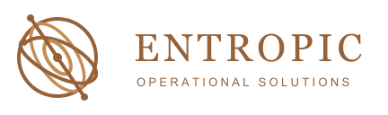
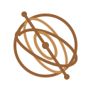
Compact mark
Three gyroscope directions. Bronze, monochrome, maroon, and white. Each pairs a compact symbol with a full horizontal wordmark.
Interlocking rings and a tilted spindle. A traditional instrument, reduced to a clear mark.


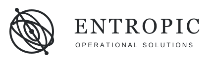
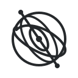
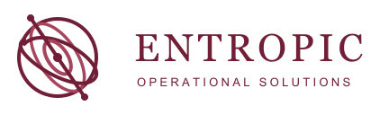
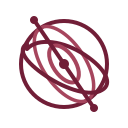
Open outer ring, elliptical rotor, and a small instrument base. A lighter, more fluid silhouette.
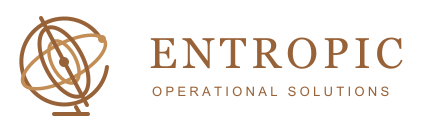
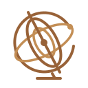
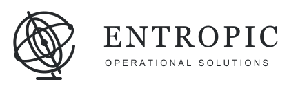
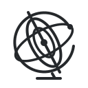
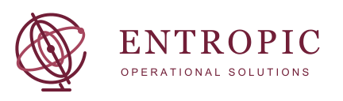
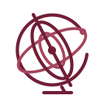
A hexagonal frame with balanced axes and a diamond hub. Structured and architectural.
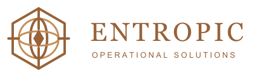
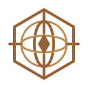
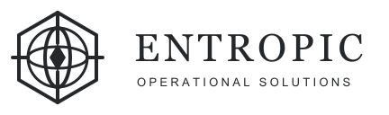
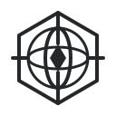
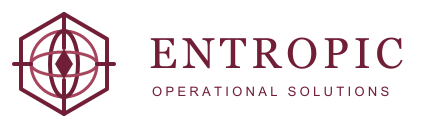
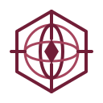
